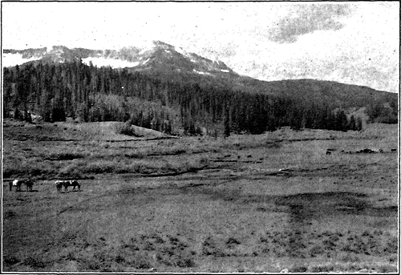
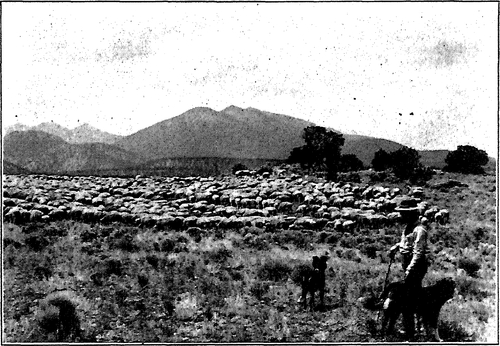

The Native Landscape. Part 2
Description
This section is from the book "The Natural Style In Landscape Gardening", by Frank A. Waugh. Also available from Amazon: The Natural Style in Landscape Gardening.
The Native Landscape. Part 2
To the farmer the landscape is a part of the day's work. He plows and sows and harvests the landscape. If he is a true farmer his fields become inestimably dear to him. The sun, the wind, and the rain are his friends. He knows and loves them.
IN THE ROCKY MOUNTAINS.
A NATIONAL FOREST LANDSCAPE-ARIZONA.
Photographs by the United States Forest Service.
The forester lives in the woods. To him the landscape is full of trees. These are spread over rocky mountain sides and interspersed with friendly brooks. So the landscape takes on for the forester a very special color and character.
In America the pioneer has played a deeply significant role. There have been generations of pioneers, from those who landed at Plymouth and Jamestown to those who settled the plains and captured the Oregon. This body of pioneers has moved forward across the continent from one ocean to the other with a slow, steady, indefeasible march. For more than 200 years their campfires lighted the way. Generation after generation of hardy men and women lived roughly in the open or sheltered by log huts or sod shanties. They lived very near to the landscape. They loved it profoundly. Many of them loved it so deeply that they could not bear to share it with neighbors. As soon as the settlements arrived and the landscape was invaded and despoiled, the pioneers moved on.
To understand anything of American history it is necessary to understand these pioneers, and to understand them at all we must understand their love of the landscape. This element has had a wide-reaching influence in American life.
This feeling, perhaps in a form of genuine heredity, shows itself frequently in the best established citizens in the midst of our most complicated modern civilization. Men break away from big cities year by year and seek the wilderness. They go to the farthest solitudes. They spend the longest vacations they can capture in hunting, fishing, tramping. They find a fierce joy in the wilderness. The landscape to them means freedom. It means release from a strenuous civilization which at best they find only partly good.
All outdoor sports constitute more or less temr porary release from civilization and a return to the landscape. Fox chasing, automobiling, fly fishing, and the entire list of outdoor recreations belong in this category. They are merely so many different ways of reaching the landscape.
Even the more socialized competitive outdoor sports, such as baseball and football, are still outdoor sports. The baseball game would be worthless if it were not played under the open sky. The spectators on the bleachers must still look up and see the blue heavens even if the horizon is damned with a circle of painted signs advertising the worst brands of beer and tobacco.
A more refined and lady-like approach to the landscape is found in gardening. Gardening as v a polite domestic art is perhaps the most complete combination of civilization and the landscape which has yet been devised. If we press this on to the point where it becomes really landscape gardening it would surely deserve this description, for what could landscape gardening be except such a full and final fusion of the landscape with the social human artificial domestic garden?
One who undertakes to study the native landscape with any thoroughness should properly approach the subject by studying the principal types of native landscape. It will not do simply to study the landscape in general. One must be more analytic and specific.
As a matter of fact most persons in their primary love of home found their love of landscape upon acquaintance with a particular type. The citizen of Cape Cod loves the sea and the dunes. The native of Nebraska loves the plains. The habitant of Quebec loves the woods, and the men bred amongst the mountains of Colorado must love the white-peaked Rockies.
The man who really sets out to know and love the landscape, however, whether he be a student of landscape architecture or a mere citizen of the universe, will try to know different types of landscape. He will seek to make the acquaintance of as many distinct types as possible. For this reason it is desirable to consider what are the principal landscape types.
It is reasonably accurate to say, though there is nothing scientific in the classification, that the four great types of landscape are the sea, the mountains, the plains, and the forests. These great types every one should know. Certainly every man who professes to be a landscape architect should assimilate into his own life these fundamental landscape forms.
The sea has always been a power in human thought. Its wide and infinite reaches, its constant motion, its vivid expression of power, its versatile changes, its human and super-human moods, its delicate colorings, even its salty smell, make it so vivid that no human consciousness could possibly escape it. A mere glimpse of the sea must profoundly impress the most unsympathetic stranger. How deeply it affects those who live with it all history can tell.
Likewise the mountains in their sublime altitudes are capable of moving men's hearts and minds to the utmost. They have a character of their own as much as the sea. Whole nations have lived with the mountains and drawn their character from them.
To the man from a different environment the plains seem monotonous. Their wide expanse, their level horizon, do not make an instant impression. Yet the men and women who live there know that this wide unbroken circle of horizon which the eye can barely reach, speaks to the mind always of infinity. Nothing could be wider and nothing could appeal more to the imagination. Nothing could assist more in the enlargement of humanity. When these wide plains are beautifully spangled with native flowers, when they are swept into billows by summer winds, when they are capped by rolling mountains of cloud, when they are ablaze with gregt prairie fires, when they take on any of their other native aspects they become tremendous, they present magnificent and tragic spectacles which leave the human mind as profoundly moved as it can ever be by the sea or mountains. Yes, the plains must always be reckoned as one of the great types of landscape.
Continue to: